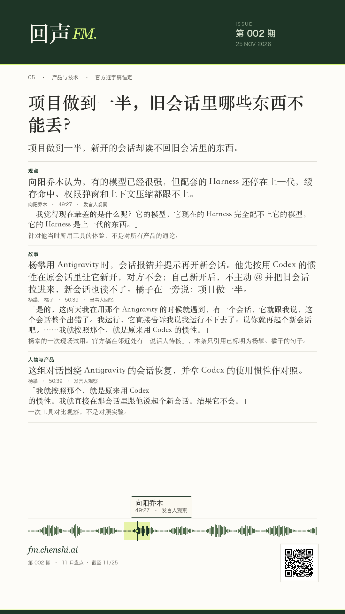

05第 002 期产品与技术11.22官方逐字稿锚定
项目做到一半，旧会话里哪些东西不能丢？
项目做到一半，新开的会话却读不回旧会话里的东西。
观点
向阳乔木认为，有的模型已经很强，但配套的 Harness 还停在上一代，缓存命中、权限弹窗和上下文压缩都跟不上。
「我觉得现在最差的是什么呢？它的模型，它现在的 Harness 完全配不上它的模型，它的 Harness 是上一代的东西。」
针对他当时所用工具的体验，不是对所有产品的通论。
故事
杨攀用 Antigravity 时，会话报错并提示再开新会话。他先按用 Codex 的惯性在原会话里让它新开，对方不会；自己新开后，不主动 @ 并把旧会话拉进来，新会话也读不了。橘子在一旁说：项目做一半。
「是的，这两天我在用那个 Antigravity 的时候就遇到，有一个会话，它就跟我说，这个会话整个出错了。我运行，它直接告诉我说我运行不下去了。说你就再起个新会话吧。……我就按照那个，就是原来用 Codex 的惯性。我就直接在那会话里跟他说起个新会话。结果它不会。然后我又新开一个会话，我就跟他说。……他也不会。……然后我得主动 @ 他，把那个拉起来。」
杨攀的一次现场试用。官方稿在邻近处有「说话人待核」，本条只引用已标明为杨攀、橘子的句子。
人物与产品
这组对话围绕 Antigravity 的会话恢复，并拿 Codex 的使用惯性作对照。
「我就按照那个，就是原来用 Codex 的惯性。我就直接在那会话里跟他说起个新会话。结果它不会。」
一次工具对比观察，不是对照实验。
节目溯源
Next Token（词元之外）· #011
本期
第 002 期 · 25 NOV 2026 · 11 月盘点 · 截至 11/25
